“切”出一个体积最大的纸盒
数学是科学的语言，数学中用于表述大多数自然法则的是微积分。微积分是描述事物成长、变化与运动情况的数学分支。本章将讨论如何确定函数变化率，如何利用多项式等简单函数近似表示复杂函数等问题。此外，微积分是一个有效的优化工具，在我们希望某个数量最大化（例如利润或容积）或最小化（例如成本或距离）时，可以帮助我们找到答案。
例如，假设你有一块边长为12英寸的正方形硬纸板（如下图所示）。如果你从4个角上各切掉一个边长为x的正方形，然后把剩余部分做成一个纸盒，那么这个纸盒的最大容积是多少？
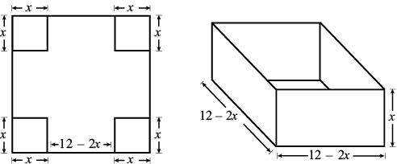
x的值为多少时纸盒的体积最大？
首先，我们把纸盒的体积表示成x的函数。纸盒的底面积为(12 – 2x) (12 – 2x)，高为 x，因此它的体积应该是：
V = (12 – 2x)2 x
我们的任务是确定x取什么值时纸盒的体积最大。x 的值不能太大，也不能太小。例如，如果 x = 0或 x = 6，纸盒的体积都是0。因此，x的值应该在0到6之间。
我们画出x在0到6之间变化时函数 y = (12 – 2x)2 x的图像。当x =1时，我们可以计算出体积 y = 100。当x = 2时，y = 128。当x = 3时，y = 108。看起来，x = 2有可能是最佳答案。不过，在1和3之间会不会有某个实数，让盒子的体积最大呢？
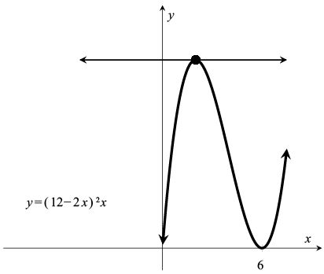
函数y = (12 – 2x)2 x在最大值处有一条水平切线
在最大值的左侧，函数呈上升趋势，斜率为正值；在最大值的右侧，函数呈下降趋势，斜率为负值。因此，在最大值处，函数值既不再增大，也不再减小。用数学语言表述，就是最大值处有一条水平切线（斜率为0）。本章将讨论如何利用微积分，在0到6之间找出有水平切线的那个点。
说到切线，我们将在本章看到种类繁多的切线。例如，我们刚才考虑的那个问题是找到切掉正方形硬纸板的四角的最佳方法。事实上，本章中有很多问题都是关于如何切掉边角的。微积分这门课程的内容极其丰富，常用教材的篇幅往往超过1 000多页。囿于篇幅，本书只关注其中最重要的内容，主要讨论“微分学”（integral calculus，研究函数的增长与变化情况），而不涉及“积分学”（differential calculus，计算复杂对象的面积与体积）。
最容易分析的函数就是直线。我们在本书第2章了解到直线y = mx + b的斜率为m。也就是说，如果x增加1，y增加m。例如，直线y = 2x + 3的斜率为2，如果x的值增加1（比如从x = 10增加到 x = 11）时，y就会增加2（从23增加到25）。
在下图中，我们画出了若干条直线的图像。其中，y = –x的斜率为–1，水平直线y = 5的斜率为0。
取任意两点，我们都可以画出一条经过这两点的直线。而且，无须知道这条直线的函数表达式，就可以确定它的斜率。如果直线经过点 (x1, y1) 和 (x2, y2) ，我们就可以根据“高度差与水平距离之比”这个公式计算出它的斜率：
m =
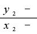
在直线 y = 2x + 3上任取两点，例如(0, 3) 和 (4, 11)，那么连接这两点的直线斜率为 m = = (11 –3)/(4 – 0) = 8 / 4 = 2。计算结果与我们通过观察方程式得到的结果一致。
接下来，我们考虑函数 y = x2 + 1（如下图所示）。该函数图像不是一条直线，它的斜率一直在变化。请大家计算点 (1, 2)处切线的斜率。
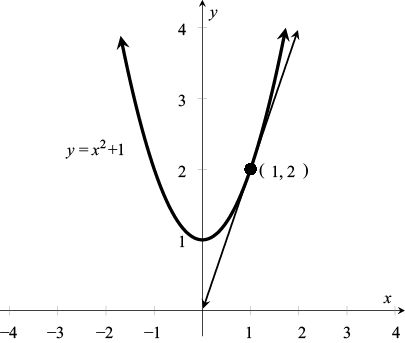
计算函数y = x2 + 1在点 (1, 2)处的切线斜率
令我们感到头疼的是，我们需要知道两个点的坐标才能计算切线的斜率，但现在我们只知道一个点 (1, 2)。因此，如上图右侧所示，我们先考虑经过曲线上两点的直线（叫作“割线”），通过这条直线的斜率求出切线斜率的近似值。如果 x = 1.5，则 y =1.52 + 1 = 3.25。接下来，考虑连接点 (1, 2)与(1.5, 3.25) 的直线斜率。根据斜率公式，这条割线的斜率为：
m = =
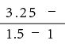
=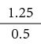
= 2.5
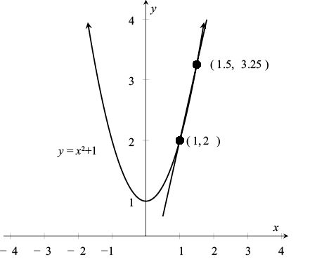
利用割线斜率求出切线斜率的近似值
为了更好地求出切线斜率的近似值，我们让第二个点向点 (1, 2) 靠近。例如，如果 x = 1.1，则 y = (1.1)2 + 1 = 2.21，于是新的割线斜率为 m = (2.21 –2)/(1.1–1) = 2.1。从下表可以看出，随着第二个点不断靠近点 (1, 2)，割线斜率趋近于2。
现在，令x = 1 + h ( h≠0 )，且与x = 1非常接近。那么，y =( 1+h )2+1 = 2h + h2。于是，这条割线的斜率为：
随着h越来越接近0，割线的斜率也会不断地向2靠近。我们把这个现象表示成：
它的意思是，当h趋近于0时，2 + h 的极限值是2。凭直觉我们知道当h越来越接近0时，2 + h 就会不断地向2靠近。由此我们发现，函数y = x2 + 1在点 (1, 2)处的切线斜率为2。
接下来，我们讨论一般情况下的切线斜率。对于函数 y = f (x)，我们希望找出点 [x, f (x)]处切线的斜率。如下图所示，经过点 [x, f (x)] 和其邻近点 [x + h, f (x + h)] 的割线斜率为：
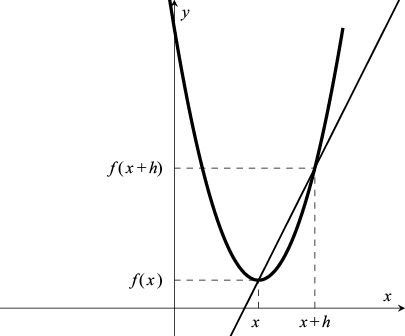
经过点 [x, f (x)] 和 [x + h, f (x + h)] 的割线斜率为
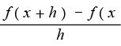
我们用符号 f '(x) 来表示点 [x, f (x)] 处的切线斜率，就有：
这个定义比较复杂，我举几个例子加以说明。对于直线 y = mx + b，有 f (x) = mx + b。要求出 f (x + h) 的值，我们可以用 x + h 替代x，即f (x + h) = m (x + h) + b。所以，割线的斜率为：
这表明斜率与x的值无关，也就是说f '( x ) = m，因为直线 y = mx + b 的斜率一定为m。
现在，我们利用这个定义求 y = x2 的“导数”（derivative）。对于这个函数，有：
=
=
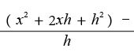
=
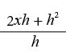
= 2x + h
所以，当h趋近0时，我们可以得到 f ' (x) = 2x。
对于f (x) = x3：
=
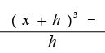
=
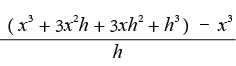
=
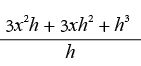
= 3x2 + 3xh + h2
所以，当h趋近0时，我们可以得到 f '(x) = 3x2。
求已知函数 y = f (x) 的导函数 f ' (x) 的过程叫作“微分”（differentiation）。告诉大家一个好消息：一旦知道了一些简单函数的导数，我们就可以轻松求出某些复杂函数的导数，而无须利用前文中介绍的基于极限的正式定义。下面这条定理十分有用。
定理：如果 u (x) = f (x) + g (x)，那么 u' (x) = f ' (x) + g' (x)。换言之，和的导数等于导数的和。此外，如果c是任意实数，那么 c f (x) 的导数是 c f ' (x)。
由于 y = x3 的导数是3x2，y = x2 的导数是2x，因此，根据上述定理，y = x3 + x2 的导数为3x2 + 2x。我们再举一个例子，对上述定理的第二句话加以说明，函数 y = 10x3 的导数为30x2。
延伸阅读
证明：令u (x) = f (x) + g (x)，那么
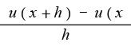
=
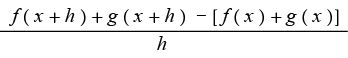
=
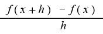
+
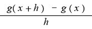
当h趋近0时，对两边求极限就会得到：
u' (x) = f ' (x) + g' (x) □
请大家注意，在对这个方程式右边求极限的时候，我们应用了“和的极限就是极限之和”这条定理。我们不准备给出关于这条定理的严谨的证明过程，但凭直觉就能知道，如果数字a趋近A，b趋近B，a + b就会趋近A + B。我们还注意到，“积的极限就是极限的积”，“商的极限就是极限的商”，这两个说法同样正确。但是，我们也将发现，导数的相关法则不像这样简单直接。例如，积的导数并不是导数的积。
就上述定理的第二句话而言，如果v (x) = c f (x)，那么：
v' (x) =
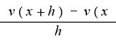
=
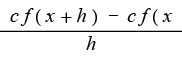
= c
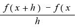
=
c f ' (
x)
证明完毕。 □
在求 f (x) = x4 的导数时，我们可以先列出函数展开式： f (x + h) = (x +h)4 = x4 + 4x3h + 6x2h2 + 4xh3 + h4。这个表达式的系数依次为1、4、6、4、1。看到这些数字，大家可能会觉得有些眼熟。原来，它们是我们在本书第4章里见过的帕斯卡三角形第4行的数字。有了函数展开式之后，我们可以得到：
=
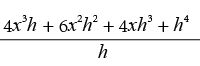
= 4x3 + h×(6x2+4xh+h2)
所以，当h趋近0时，就会得到 f '(x) = 4x3。看出其中的规律了吗？ x、x2、x3和x4的导数分别是1、2x、3x2和4x3。即使指数继续增加，这个规律仍然成立，因此我们可以得出下面这个非常有用的定理。另一个常用的导数符号是y'，从现在开始，我们就使用这个符号。
定理（幂函数求导公式）：对于nH0，
y = xn的导数为 y' = nxn–1
例如：
如果 y = x5，那么 y' = 5x4
再例如：
如果 y = x10，那么 y' = 10x9
常数函数，例如 y = 1，也可以根据这个规则求导。因为1= x0，因此，无论x的值是多少，y = x0 的导数都是0x–1 = 0。这个结果不难理解，因为直线 y = 1是一条水平线。结合幂函数求导公式和前文中给出的那条定理，我们可以求出任意多项式的导数。例如：
y = x10 + 3x5 – x3 – 7x + 2 520
y' = 10x9 + 15x4 – 3x2 – 7
即使n不是正整数，幂函数求导公式也成立。例如：
再例如：
但是，我们目前还无法给出证明过程。接下来，我们利用已学到的知识，解决一些有趣又实用的最优化问题。